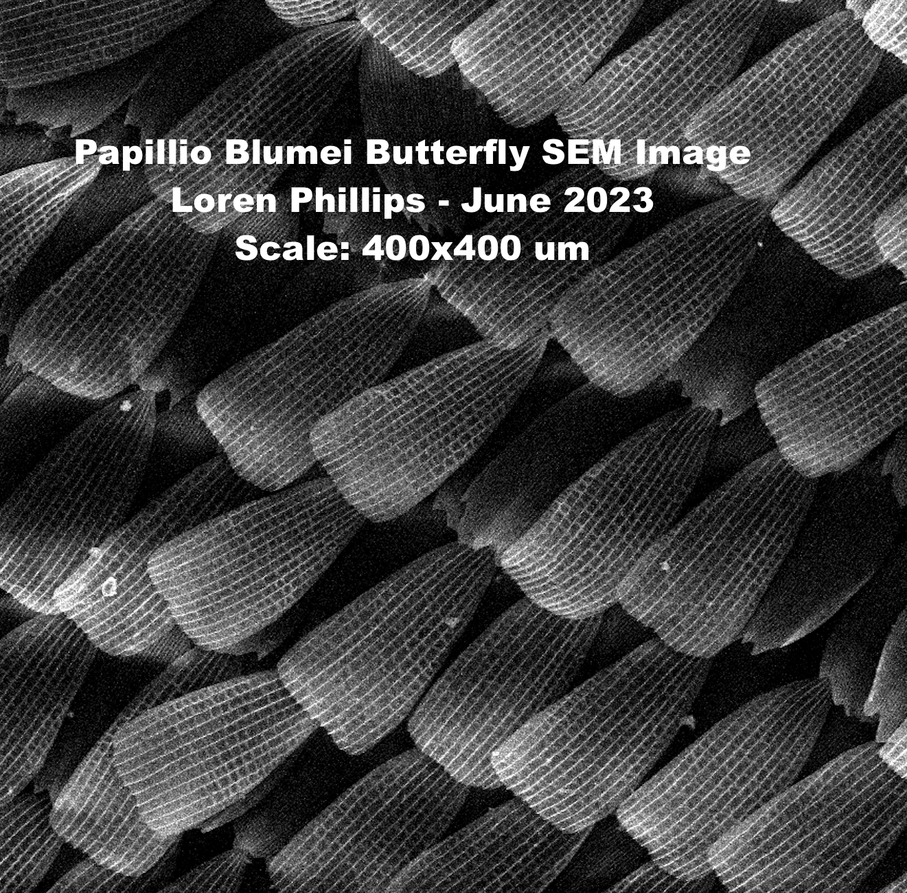

Poulikakos Lab
Working in the fast-paced collaborative lab environment, I strive to successfully apply plasmonic nanosystems and nanostructures to enhance medical imaging technology.
What Do I Do?
 As a member of the Poulikakos Lab, I use my talents, experience, and excitement, to research the fabrication of photonic metasurfaces. I am inspired by the prospect of applying engineering principles to advance medical science. Most recently, I have been working to replicate structural color from nature. This has involved collaboration with ETH Zurich, and the University of Washington. I feel blessed to get experience pushing the cutting edge of nanotechnology while learning how to operate in a lab environment, and coordinate the complicated logistics of cross-university collaboration.
Recipient of the Triton Research & Experiential Learning Scholars (TRELS) Scholarship
I am delighted to announce that I was honored with the prestigious Triton Research & Experiential Learning Scholars (TRELS) Scholarship! This remarkable opportunity was made possible through the unwavering support of the Council of Provosts of the Undergraduate Colleges at UC San Diego and the Undergraduate Research Hub.
The TRELS program empowered me to pursue intellectual opportunities beyond the classroom, providing invaluable support in the form of funding and mentorship. Throughout this transformative experience, I had the privilege to explore experiential learning in various fields, including research, guided artistic or creative projects, and public service initiatives, all under the guidance of a distinguished UC San Diego faculty member.
One aspect that truly set TRELS apart was its dedication to serving students who may face obstacles in pursuing such opportunities. This emphasis on inclusivity and equity resonated deeply with my values, and I am immensely grateful for the chance to contribute to and benefit from a community that prioritizes diversity and accessibility.
Being part of the TRELS program has been an enriching journey, expanding my academic horizons while nurturing personal growth and development. I am proud to have been part of a program that exemplifies UC San Diego's commitment to providing a holistic education that extends beyond the confines of traditional learning.
As I look back on this incredible experience, I am humbled by the recognition and motivated to carry forward the knowledge and skills gained through TRELS to create positive change in both my life and the lives of others.
December 20, 2021
Undergraduate Research Experience
Using nano and mechanical engineering to address global health challenges.

Interactive elements are currently being added to this section. Please visit the Poulikakos Lab website for the most recent updates!